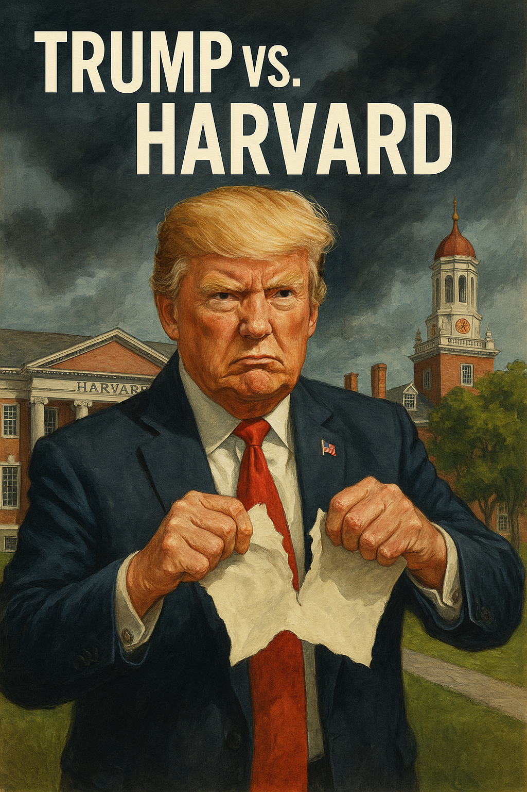

Publicado em 2025-05-23 15:03:10
Nos Estados Unidos da América, essa potência tantas vezes auto-intitulada bastião da liberdade, uma guerra silenciosa alastra-se — não nos campos de batalha, mas nas salas de aula, nos auditórios, nas bibliotecas. O novo inimigo? A liberdade académica. O novo general? Donald Trump, que, já não satisfeito com as feridas internas que deixou na democracia americana, decidiu agora lançar uma cruzada contra Harvard, uma das mais antigas e prestigiadas universidades do planeta.
O motivo oficial? Harvard estaria a fomentar “ideologias woke” e a não combater eficazmente o antissemitismo no seu seio. Mas por trás desta retórica encontra-se uma tentativa clara de submeter as instituições independentes ao poder central, domesticando o saber, tal como se domesticam os cães de guarda de uma república que se quer obediente.
A medida da administração Trump de revogar a autorização para Harvard receber estudantes estrangeiros afeta milhares de jovens de mais de 100 países. É um golpe direto à internacionalização do saber, à diversidade de pensamento e ao futuro da ciência e da cooperação global. O conhecimento, esse bem comum que deveria ser celebrado e estimulado, é agora suspeito. Tornou-se uma ameaça.
Harvard respondeu como se exige a quem tem espinha dorsal: processou o governo federal. E mais de 150 reitores de universidades uniram-se em defesa da autonomia académica. Até um juiz federal da Califórnia interveio, bloqueando temporariamente a aplicação da medida, numa daquelas raras ocasiões em que a justiça americana parece querer resgatar a sua própria dignidade.
Mas este episódio é apenas mais um sintoma de uma patologia mais profunda: a fragilidade estrutural da democracia americana, tão idolatrada e ao mesmo tempo tão vulnerável ao populismo. Um só homem, à margem da racionalidade, conseguiu manipular o medo, dominar o discurso, controlar o partido e envenenar o debate. E agora, tenta controlar também as universidades.
Não é a primeira vez na História que regimes autoritários atacam os bastiões do pensamento. Hitler perseguiu académicos, Mao instituiu a revolução cultural contra as elites intelectuais, Salazar mandava os estudantes para a guerra para que não pensassem demais. A fórmula é velha: se quiseres controlar o povo, primeiro cala os que pensam.
A questão que se impõe é: onde está a força política e ética para lhe fazer frente? Onde está a América de Martin Luther King, de Noam Chomsky, de Eleanor Roosevelt? Onde estão os senadores que defendem a Constituição com firmeza? Onde está a coragem republicana, já que a dos democratas tem-se revelado tímida, quase decorativa?
Trump não é um tirano iluminado nem um génio maquiavélico. É o produto de um sistema doente, onde a verdade vale menos do que a aparência e onde a ignorância se tornou uma virtude de campanha. Mas é também o catalisador de um tempo sombrio, onde se pretende que as universidades ensinem sem provocar, pesquisem sem questionar, eduquem sem libertar.
O caso Harvard é, pois, mais do que um confronto legal. É simbólico. É a batalha entre a luz e a sombra, entre a razão e o instinto primitivo do poder pelo poder. Se Harvard cair, cairá com ela uma parte essencial da alma americana.
E nós, cá do lado de cá do Atlântico, faremos bem em observar — não como quem assiste a um espetáculo alheio, mas como quem antevê um espelho do que pode vir. Porque o vírus do autoritarismo já não conhece fronteiras, e a ignorância organizada é hoje a arma mais letal dos novos tempos.
Artigo escrito por Augustus Veritas
Imagem cortesia de OpenAI (c)